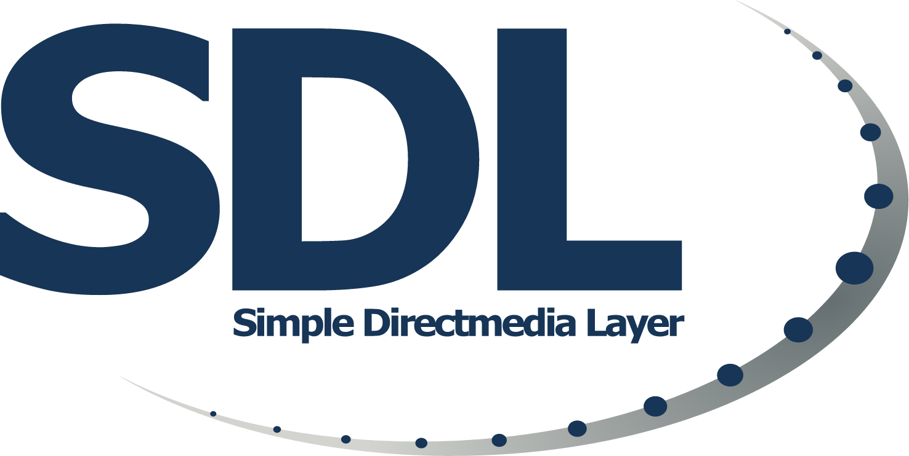
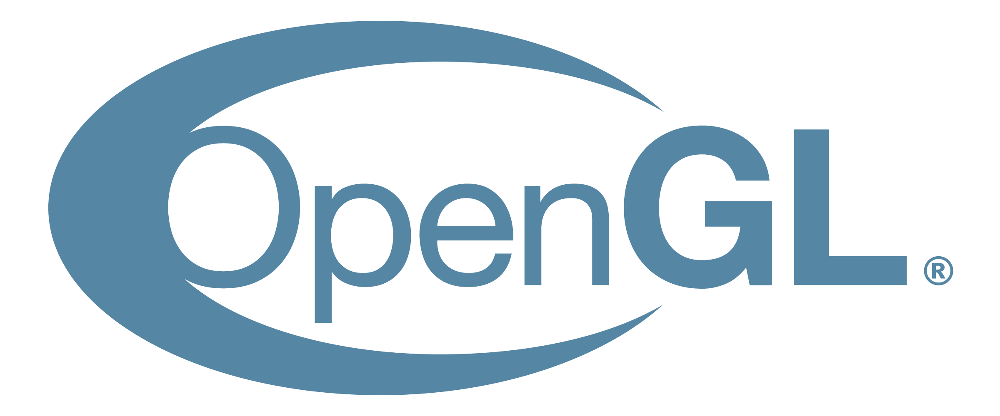

Spis treści
- Rozdział 1 - Czym jest grafika w C++?
- Rozdział 2 - Podstawowe pojęcia
- Rozdział 3 - Jedne z najpopularniejszych Bibliotek graficznych
- Rozdział 4 - Typy grafiki
Czym jest grafika w C++?
Grafika w C++ to dziedzina programowania, która pozwala tworzyć obrazy, animacje i całe środowiska wizualne przy użyciu kodu. Jest wykorzystywana w grach, aplikacjach oraz symulacjach.
Na najprostszym poziomie polega na pracy z pikselami, a na bardziej zaawansowanym - na wykorzystaniu specjalnych bibliotek i API do renderowania grafiki w czasie rzeczywistym.
Obejmuje:
- Rendering (generowanie obrazu)
- Manipulację pikselami
- Pipeline graficzny
Podstawowe pojęcia!
Zanim zaczniesz tworzyć grafikę, warto zrozumieć kilka kluczowych mechanizmów, które stoją za wyświetlaniem obrazu.
-
Rendering
Rendering to proces tworzenia obrazu na podstawie danych - na przykład rysowania obiektów, tekstur i światła na ekranie.
-
Manipulacja pikselami
To najniższy poziom pracy z grafiką. Polega na bezpośredniej zmianie pojedynczych pikseli, co daje pełną kontrolę, ale wymaga więcej pracy.
-
Pipeline graficzny
Pipeline graficzny to zestaw etapów, przez które przechodzą dane graficzne - od modelu, przez transformacje, aż do finalnego obrazu.
Jedne z najpopularniejszych Bibliotek graficznych
- Prosta i przyjazna biblioteka dla początkujących. Pozwala szybko tworzyć okna, rysować obiekty 2D i obsługiwać zdarzenia.
-

Daje większą kontrolę nad działaniem programu i sprzętem. Często używana w bardziej zaawansowanych projektach i silnikach gier.
-

Jedno z najpopularniejszych API do grafiki 3D. Umożliwia tworzenie zaawansowanych scen, ale wymaga zrozumienia działania grafiki komputerowej.
-
 Nowoczesne i bardzo wydajne API. Pozwala bezpośrednio zarządzać GPU, ale jest znacznie trudniejsze w nauce.
Nowoczesne i bardzo wydajne API. Pozwala bezpośrednio zarządzać GPU, ale jest znacznie trudniejsze w nauce.
Typy grafiki
Grafika 2D
Używana głównie w prostszych grach i interfejsach użytkownika.
- Sprite’y
- UI
- Animacje
Grafika 3D
Pozwala tworzyć trójwymiarowe światy i realistyczne sceny.
- Modele 3D
- Oświetlenie
- Kamery i perspektywa
Grafika proceduralna
Tworzona matematycznie zamiast przy użyciu gotowych obrazów.
- Generowanie terenu
- Szumy (noise)
- Fraktale
Dlaczego warto?
Grafika w C++ daje ogromne możliwości - od tworzenia gier, przez silniki graficzne, aż po zaawansowane symulacje. To także świetny sposób, żeby zrozumieć, jak działa komputer „od środka” i jak program komunikuje się z kartą graficzną.